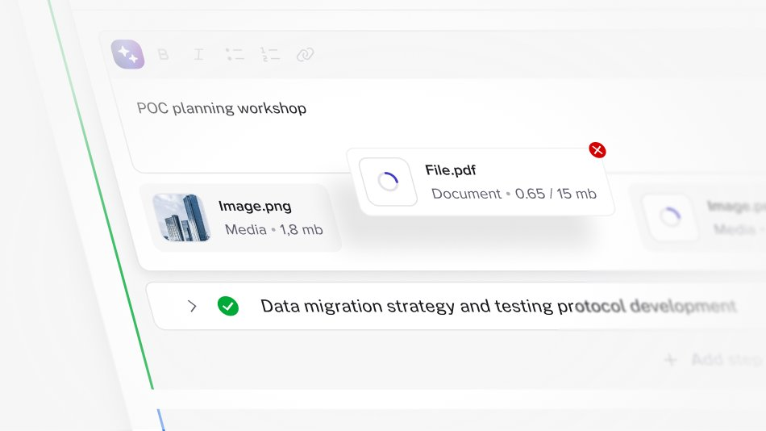
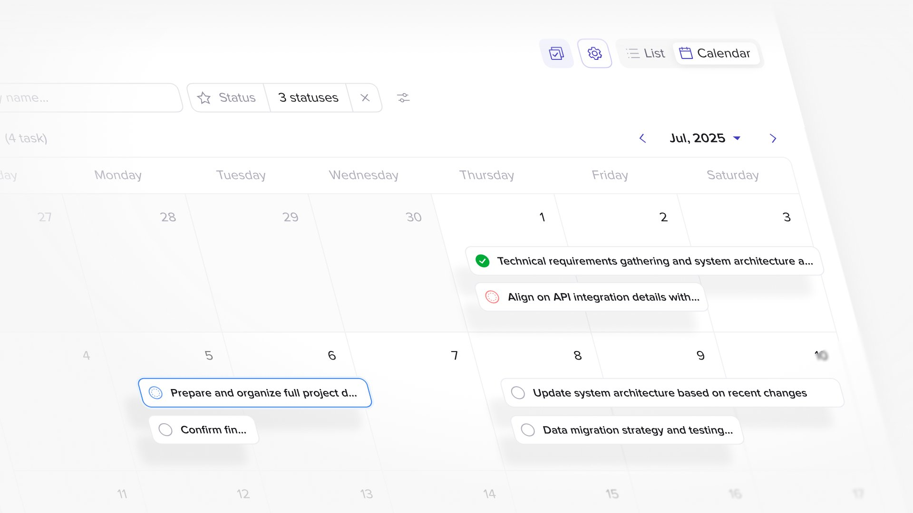
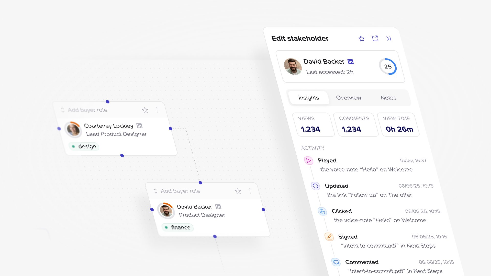
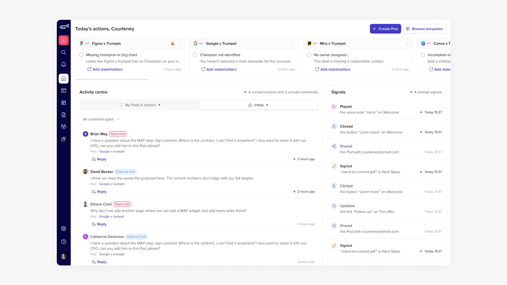

Trumpet
A B2B sales enablement platform. I helped make complex workflows clearer and brought greater consistency to the product through a shared design system.

Overview
Trumpet helps sales teams organize buyer-facing content and collaboration in shared digital spaces.
My work focused on the interfaces behind that experience: helping users navigate content, manage items, and work with actions and filters more clearly. Alongside these improvements, I developed shared design foundations to connect features through consistent behavior and visual language.


My role
As a Product Designer, I worked across product interfaces and the design system, connecting individual workflow improvements with reusable components.
- Developed design tokens and shared components for tables, filters, buttons, tags, and alerts.
- Refined bulk actions, archive flows, and save and action bars.
- Contributed to chat filters, calendar interfaces, widgets, and AI-related controls.
- Prepared interaction states and detailed designs for implementation.

Challenge
As the product expanded, more workflows needed to coexist within the same interface. Users had to distinguish between navigation, item-level actions, bulk operations, and changes that still needed saving.
The challenge was to make these interactions clear while establishing patterns that could support different features consistently.

Approach
I focused on making actions predictable and their scope easy to understand. Tables and filters helped organize information, while dedicated save and action bars clarified what users could do next.
I also refined bulk selection, archive, and recovery patterns to make item management more explicit. These decisions became reusable components, supported by design tokens and defined interaction states.



Outcome
My contribution brought more structure to Trumpet’s interface and established consistent patterns for managing content and completing everyday tasks.
The design system gave the team a shared reference for extending the product, making existing decisions reusable across features. Together, the workflow improvements and component foundations helped create a more cohesive product experience.


